Justin
Greeno
Nova Scotia, Canada
2 Diplomas, BCIT
Masters in Neuropsychology
3 Bachelor of Arts Degrees
I grew up on a farm in Nova Scotia, wide open spaces, hard work, and a natural curiosity about how everything in the world is put together. That curiosity never left. It led me through six degrees across neuropsychology, moral philosophy, political science, and web development. I just can't stop learning.
For over a decade I have worked as a counselor. From 2010 to 2016 I supported adults with intellectual disabilities in Halifax. From 2016 to 2023 I was on the frontlines of the opioid epidemic in Vancouver, working in addictions and harm reduction with homeless and drug-addicted populations. Transitional housing, crisis intervention, community outreach. Today I am back in Nova Scotia on a housing transitioning team, supporting adults with intellectual disabilities. Caring for others isn't something I do; it's something I am.
Since 2019 I've been freelancing as a web developer, designing and building everything from client sites to full web applications, end-to-end. I returned to Nova Scotia to care for my aging mother-in-law, bringing that same dedication home. I grow a large garden, cook from it, and find the same meditative satisfaction in tending plants as I do in writing clean code.
I'm also solo-developing Darkness Blooms, a retro-style RPG. Every pixel, every line of code, every word of the story. If there's a theme running through everything I do, it's this: a relentless curiosity about the world, and an equally relentless desire to give back to it.
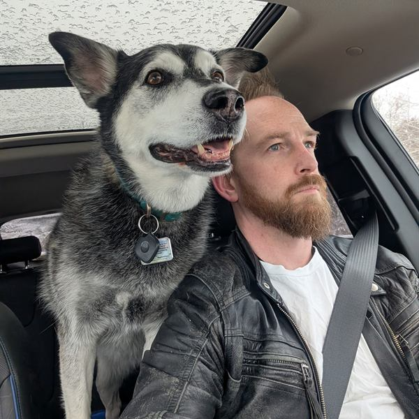
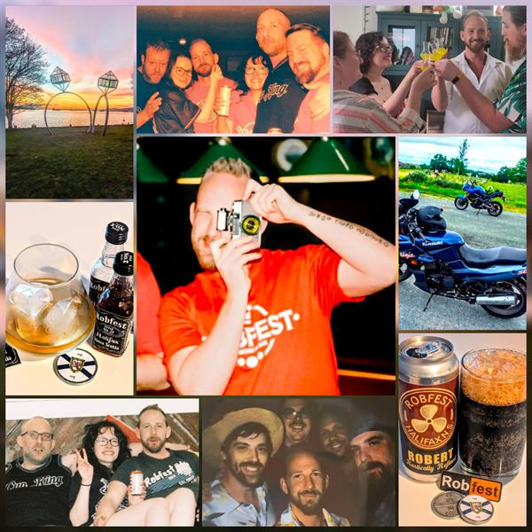
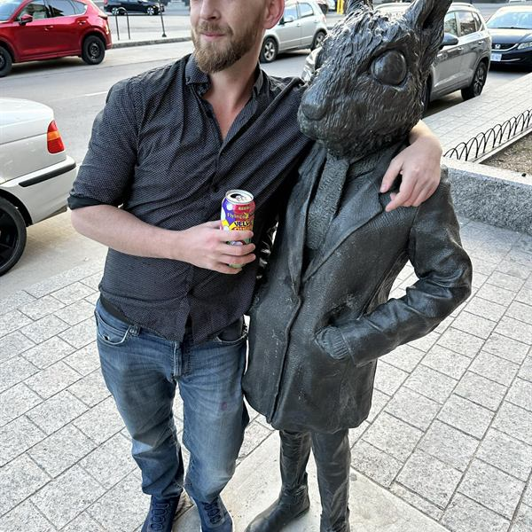
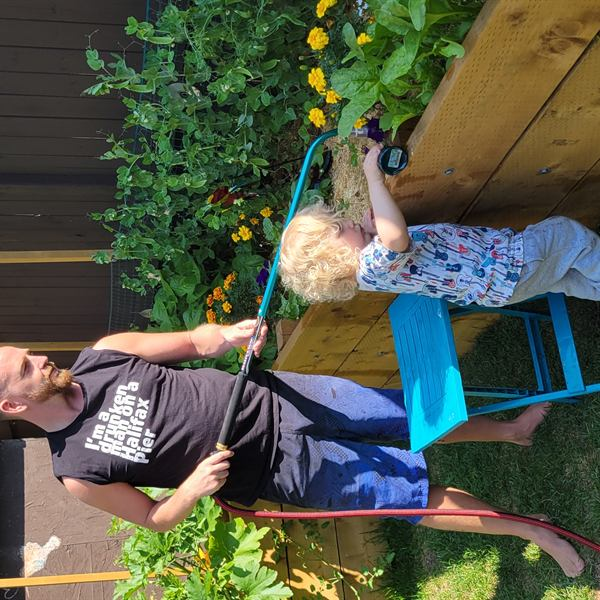
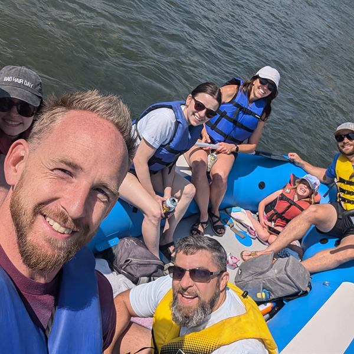
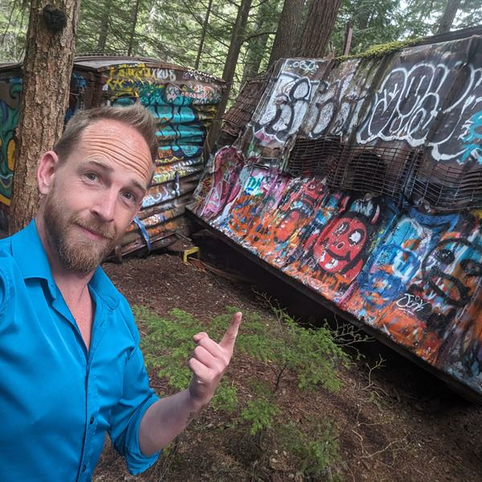
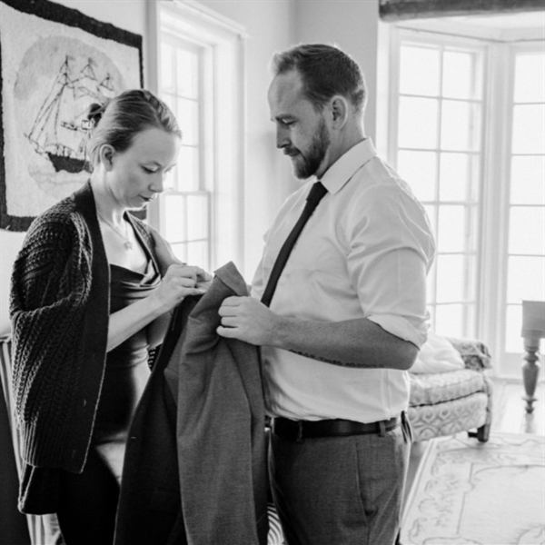
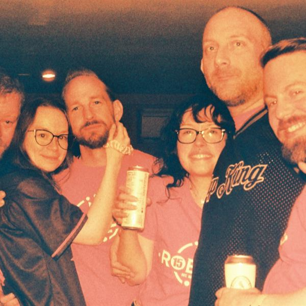
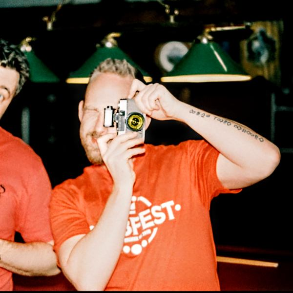
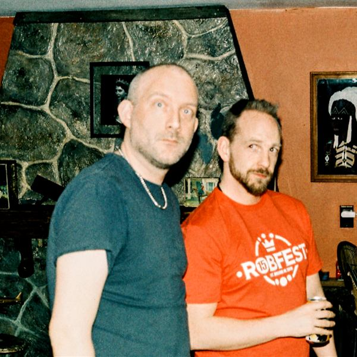
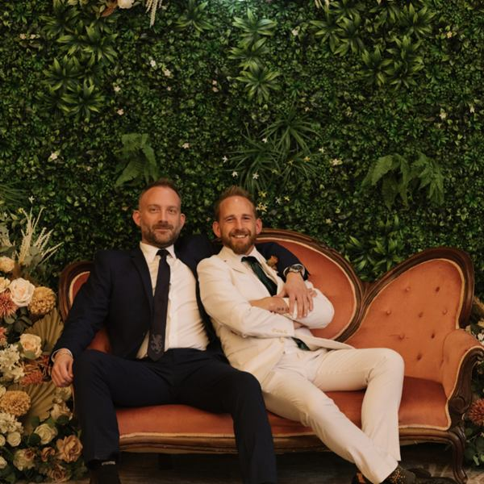
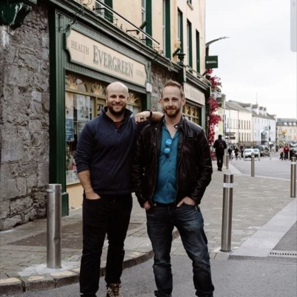
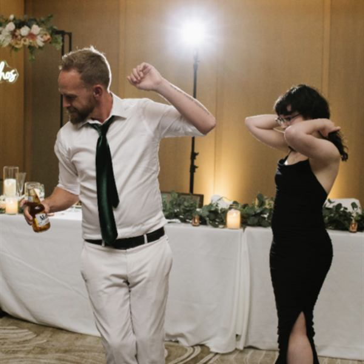
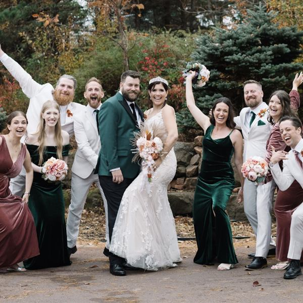
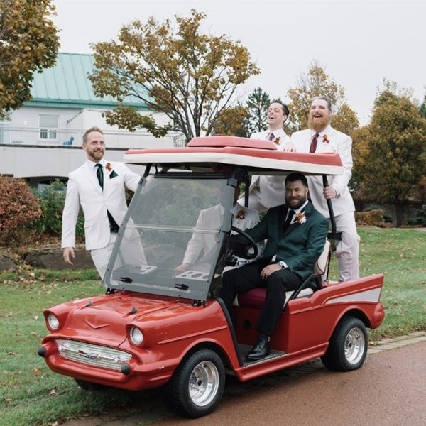
Education
Diploma. Front-end and back-end development, databases, APIs, modern frameworks.
Diploma. JavaScript, React, Node.js, responsive design, and deployment pipelines.
Graduate research in cognitive neuroscience, behavioral analysis, and psychological theory.
Three Bachelor of Arts degrees. Neuropsychology at Saint Mary's University. Moral Philosophy and Political Science at UBC.